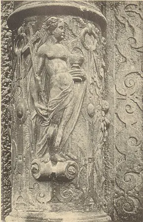

Reject an image by adding its slug to public/charades/charades-hard/reject.txt (append ! to keep it word-only), then re-run node scripts/genimages.mjs.
Jealousy jealousy CC0 · This image is available from the National Library of Wales You can view this image in its original context on the NLW Catalogue · sourceJet lag jet-lag CC BY-SA 2.0 · Simon Boddy from Maidenhead, Uk · sourceJitters jitters Public domain · Staff Sgt. Emily Anderson · sourceJoy joy CC BY-SA 4.0 · Bram Berkelmans · sourceJustice justice Public domain · Detroit Publishing Co.; restored by Adam Cuerden · source
Levitation levitation Public domain · Henrique Alvim Corrêa · sourceLiberty liberty CC0 · brenkee · sourceLoneliness loneliness CC BY 4.0 · Vyacheslav Argenberg · source
word only
Longing longing

Loyalty loyalty Public domain · Albert Ludorff · sourceLuck luck CC BY-SA 4.0 · Mary Harrsch · sourceLullaby lullaby Public Domain Mark · Nelley · source